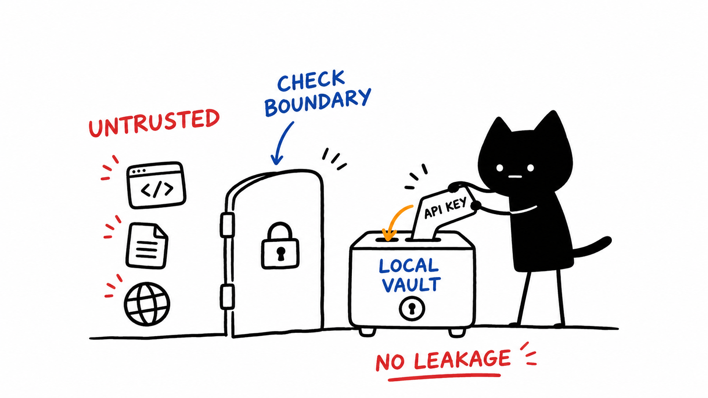

Security status and verification scope
Operations & verification
docs/security-audit.md
Original source language. Download source · All documents

This is an operational status document, not a completed security certification. Earlier architecture descriptions overstated guarantees about sandboxing, credential isolation, offline operation, and test coverage. A process boundary, a profile, or a passing health endpoint does not establish those guarantees.
Explicitly deferred work
Endpoint authentication, per-client authorization, exposed-credential rotation, public-exposure review, and resource/session limits remain deferred by the operator's development decision. Deferred does not mean implemented or safe for unrestricted public use. The documentation refresh does not change access controls or rotate credentials.
Filesystem, shell, PTY, browser, model-agent, and device operations can act with the server account's privileges. Scope and deploy them accordingly. Runtime profiles select eligible cells; they are not a substitute for an authorization policy or an OS sandbox.
What the current checks establish
- Source snapshots pin revisions. Runtime schema catalogs additionally validate versions/build digests and declared feature variants; private caches separate profiles, roots, namespace modes, revisions, builds, and declared configuration.
- Isolated tests cover runtime timeouts, process exit before restart, bounded retries, first-call startup, concurrent calls, stale-cache refusal, and shutdown. This is lifecycle/reliability evidence, not complete adversarial testing.
- Doctor checks real isolated MCP initialize/discovery, selected paths/versions/revisions, and optional runtime catalog parity. Hardware, provider, and authenticated GUI checks remain separate.
- Genome's online backups include committed WAL data and validate integrity; restore refuses existing destinations and sidecars. This does not authorize overwriting an active database.
- Vault synchronization preserves divergent notes in conflict archives. Archived conflicts still need deliberate review; transport success does not prove reconciliation.
See runtime verification, profile verification, and each server's current tool reference for exact scope. Do not promote historical benchmark/test totals into current security claims.
Credentials and generated output
Doctor and schema-generation probes do not display credential values; isolated probes exclude inherited keys and live vault hooks. Generated client configuration, however, can contain credentials explicitly supplied by its user. Treat configuration files, generator stdout, backups, and issue attachments as private. Never paste a raw client configuration or process environment into a public issue.
Presence of an API key does not prove provider readiness. Keyless research can still make network requests. Needle's local execution depends on its engine/model, and some generative operations need a configured model provider. Optional remote runtime/vault deployment also changes where data is processed and stored.
Carry-forward validation
PTY orphan handling, SSH failures/transfers, browser network boundaries, archive/symlink policies, Android hardware, Blender execution, live search fallbacks, and external design services still need their own targeted checks. Tests for some of these exist, but full coverage is not implied by ecosystem configuration or discovery checks.
Current package versions and generated counts are in current versions. Historical release notes and immutable snapshots retain their original versions and evidence; they are not current acceptance guarantees.